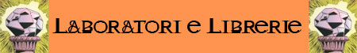
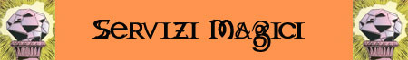

DESCRIZIONE
Una volta entrati nella parte sotterranea del Villaggio della Gemma Splendente, si comprende subito come il nome non sia dovuto al semplice richiamo alla passione Svirfneblin per i preziosi minerali. Al centro della piazza del borgo, denominata Piazza della Gemma Grande, infatti si staglia una gigantesca costruzione avente la forma di un dodecaedro, dal colore giallo pallido nella parte superiore e con riflessi che vanno dall’arancione al rosso scuro nella parte inferiore. La costruzione robusta e dalla forma caratteristica è fatta in granito ad eccezione di dei pentagoni laterali e quelli superiori che sono formati da materiali riflettenti e cristallini per far passare la luce. Quando il sole è allo zenit, per pochi secondi i fasci di luce che scendono attraverso un giochi di specchi da alcuni stretti cunicoli posti sulla volta della caverna colpiscono questo dodecaedro da più parti e dallo stesso una molteplicità di raggi luminosi di vari colori irradiando la piazza principale del villaggio. Lo spettacolo che dura circa un minuto è estremamente affascinante e rappresenta il grande ingegno degli gnomi del profondo. Solo durante il solstizio d’estate quest’effetto è prolungato ed estremamente radioso. Secondo la leggenda, è in quel giorno che alla scuola di magia si concentra il massimo sforzo magico per completare alcuni rituali e dar vita a potenti oggetti magici.
Alla Scuola del Cristallo Magico si accede appunto attraverso un ingresso situato nella Piazza della Gemma Grande. L'ingresso è rappresentato da una sezione di cunicolo interamente rivestita da cristallo di roccia di colore azzurrino. L'effetto è tale che entrandoci si ha l'impressione di inoltrarsi all'interno di una caverna ghiacciata. Si tratta di un cunicolo alquanto stretto che può essere attraversato al massimo da una creatura di taglia media in modo scomodo. Una volta varcato il pesante portone dell’ingresso in ottone ubicato alla fine del cunicolo di cristallo lungo circa 10 metri si entra nella cosiddetta Sala Ambrata che funge sia da sala da attesa che da zona dedicata al commercio. La sala prende in nome proprio dal colore giallo intenso ed arancione delle mura e degli arredi. In questa prima sala l’accesso è autorizzato a tutti coloro che vogliono usufruire dei servizi della scuola e del suo mercato del magico. La sala è illuminata grazie alla presenza di particolari fonti di luce. Infatti non ci sono le classiche lanterne alle pareti o fiaccole, ma ogni 6 metri è presente una colonna alla cui sommità vi è una grande gemma, probabilmente di cristallo o altro materiale vitreo, al cui interno arde una fiamma come una lanterna. Lungo le mura perimetrali della sala vi sono alcuni sportelli ognuno dei quali è destinato ad un servizio specifico. Vi sono, infatti, gli sportelli del Mercato del Magico dove acquistare o vendere gli oggetti magici, lo sportello per i servizi di identificazione, lo sportello per l'acquisto di incantesimi di incantamento ed uno sportello generico di segreteria per le comunicazione con i maghi della scuola. Nella zona posizionata dietro gli sportelli, alla quale non hanno accesso gli esterni, si diramano gli uffici interni della scuola con i registri degli atti stipulati dai quali poi è possibile accedere ai laboratori magici. Oltre agli sportelli vi è una piccola porta di legno massiccio riccamente intarsiata ai cui lati sono poste due statue di granito raffiguranti due guerrieri corazzati. Attraverso questa porta i membri della scuola possono accedere alle zone interne loro riservate. Secondo le dicerie nelle due statue sarebbe imprigionata l'anima di due antichi guerrieri e le stesse sarebbero in realtà i custodi dell’entrata, pronti ad animarsi per difendere la scuola dagli intrusi. Nessuno può affermare di aver visto mai queste statue muoversi. Solo un certo Glivion, giovane vagabondo Svirfneblin, più volte pizzicato in affari poco leciti, raccontava di essere entrato di nascosto all’interno dell’accademia e di aver visto, prima di fuggire a gambe levate, le statue muoversi verso di lui; ma seri dubbi sono emersi circa l'attendibilità di una siffatta dichiarazione. Nel corso dei racconti effettuati nelle taverne affollate, prima di sparire misteriosamente e senza motivo alcuno, Glivion amava ricordare come i due guardiani si fossero accorti della sua presenza sebbene nella stanza le grandi luci fosse spente lui fosse abilissimo nel nascondersi e nel muoversi senza far rumore. Una delle leggende del villaggio narra che Glivion, dopo aver ottenuto un'antica mappa di un tesoro Duergar, abbia intrapreso una difficile missione per il suo ritrovamento ed ora, dopo aver trovato centinaia di preziose gemme di varia grandezza e tipologia, viva nel tanto agognato lusso sfarzoso in una località mantenuta segreta per evitare di condividere la sua fortuna con gli altri gnomi del villaggi.
STUDIARE LA MAGIA PRESSO IL CRISTALLO MAGICO
A tutti i membri della Scuola del Cristallo Magico è consentito libero accesso, senza restrizione alcuna, alle magie in vendita presso la scuola. Prima di ogni accesso, l'utente di magia deve pagare anticipatamente alla scuola il costo espresso in monete d'oro degli incantesimi. Il costo non comprende gli inchiostri e libri per trascrivere l’incantesimo. Se il mago non impara la magia deve ripagarlo interamente qualora si decida di riprovare a studiarla.
DIVINAZIONE DI BASE DEL PRIMO LIVELLO DI POTERE
| N. | INCANTESIMO | SCUOLA PRIMARIA | GRADO | SCUOLA SECONDARIA | GRADO | COSTO |
| 1 | Magical Appraising | Divination | 1° | -- | -- | 125 |
| 2 | Gem Access | Divination | 1° | -- | -- | 115 |
| 2 | Read Magic | Divination | 1° | -- | -- | 100 |
| 3 | Detect Disease | Divination | 2° | -- | -- | 200 |
| 4 | Detect Secret Passages | Divination | 2° | -- | -- | 250 |
| 5 | Detect Magic | Divination | 3° | -- | -- | 330 |
| 6 | Indaral’s Fluids Identification | Divination | 3° | -- | -- | 375 |
| 7 | History | Divination | 4° | -- | -- | 450 |
| 8 | Identify | Divination | 4° | -- | -- | 500 |
INCANTESIMI DI PRIMO LIVELLO DI POTERE
| N. | INCANTESIMO | SCUOLA PRIMARIA | GRADO | SCUOLA SECONDARIA | GRADO | COSTO |
| 1 | Eldron Secret Writing | Enchantment | 1° | -- | -- | 125 |
| 2 | Wizard Glue | Enchantment | 1° | -- | -- | 100 |
| 3 | Divining Rod | Enchantment | 2° | Divination | 1° | 210 |
| 4 | Lesser Specific Magical Armour | Enchantment | 2° | -- | -- | 200 |
| 5 | Lesser Specific Magical Shield | Enchantment | 2° | -- | -- | 200 |
| 6 | Lesser Specific Magical Weapon | Enchantment | 2° | -- | -- | 200 |
| 7 | Staff of Light | Enchantment | 2° | Alteration | 1° | 250 |
| 8 | Thieves Enchanted Tools | Enchantment | 2° | -- | -- | 230 |
| 9 | Electric Field | Enchantment | 3° | Evocation | 1° | 315 |
| 10 | Electric Shield | Enchantment | 3° | Evocation | 1° | 330 |
| 11 | Gemstone of Explosion | Enchantment | 3° | Evocation | 1° | 300 |
| 12 | Imbue with Touch | Enchantment | 3° | -- | -- | 350 |
| 13 | Holy Symbol Enchanter | Enchantment | 4° | -- | -- | 475 |
| 14 | Lesser Sectorial Magical Armour | Enchantment | 4° | -- | -- | 400 |
| 15 | Lesser Sectorial Magical Shield | Enchantment | 4° | -- | -- | 400 |
| 16 | Lesser Sectorial Magical Weapon | Enchantment | 4° | -- | -- | 400 |
| 17 | Magic Wands Improver | Enchantment | 4° | -- | -- | 450 |
INCANTESIMI DI SECONDO LIVELLO DI POTERE
| N. | INCANTESIMO | SCUOLA PRIMARIA | GRADO | SCUOLA SECONDARIA | GRADO | COSTO |
| 1 | Magic Flask | Enchantment | 1° | -- | -- | 200 |
| 2 | Improved Bashing | Enchantment | 2° | Alteration | 1° | 450 |
| 3 | Instant Recall | Enchantment | 2° | Conjuration | 1° | 500 |
| 4 | Special Metal Armour Enhancer | Enchantment | 2° | -- | -- | 400 |
| 5 | Special Metal Weapon Enhancer | Enchantment | 2° | -- | -- | 400 |
| 6 | Special Metal Weapon Enhancer | Enchantment | 2° | -- | -- | 400 |
| 7 | Belt of Constitution | Enchantment | 3° | Alteration | 2° | 700 |
| 8 | Boots of Dexterity | Enchantment | 3° | Alteration | 2° | 700 |
| 9 | Bracers of Force | Enchantment | 3° | Alteration | 2° | 700 |
| 10 | Lesser Magical Armour | Enchantment | 3° | -- | -- | 600 |
| 11 | Lesser Magical Shield | Enchantment | 3° | -- | -- | 600 |
| 12 | Lesser Magical Weapon | Enchantment | 3° | -- | -- | 600 |
| 13 | Light Armor | Enchantment | 3° | Alteration | 1° | 650 |
| 14 | Activate Lesser Enchatment | Enchantment | 4° | -- | -- | 900 |
| 15 | Gemstone of Healing | Enchantment | 4° | Evocation | 1° | 1000 |
INCANTESIMI DI TERZO LIVELLO DI POTERE
| N. | INCANTESIMO | SCUOLA PRIMARIA | GRADO | SCUOLA SECONDARIA | GRADO | COSTO |
| 1 | Image on Item | Enchantment | 1° | -- | -- | 345 |
| 2 | Channel Item | Enchantment | 2° | -- | -- | 700 |
| 3 | Armor Defence | Enchantment | 2° | Abjuration | 1° | 800 |
| 4 | Levitating Magic Basket | Enchantment | 2° | Alteration | 1° | 750 |
| 5 | Levitating Shield | Enchantment | 2° | Alteration | 1° | 800 |
| 6 | Magic Toolbox | Enchantment | 2° | Conjuration | 1° | 765 |
| 7 | Magical Bell | Enchantment | 2° | Divination | 1° | 775 |
| 8 | Specific Magical Armour | Enchantment | 2° | -- | -- | 700 |
| 9 | Specific Magical Shield | Enchantment | 2° | -- | -- | 700 |
| 10 | Specific Magical Weapon | Enchantment | 2° | -- | -- | 700 |
| 11 | Gem Write | Enchantment | 3° | -- | -- | 1000 |
| 12 | Magic Portal | Enchantment | 3° | Abjuration | 1° | 1100 |
| 13 | Secure the Book | Enchantment | 3° | Abjuration | 1° | 1050 |
| 14 | Animate Armour | Enchantment | 4° | -- | -- | 1500 |
| 15 | Exploding Coins | Enchantment | 4° | Evocation | 2° | 1600 |
| 16 | Sectorial Magical Armour | Enchantment | 4° | -- | -- | 1400 |
| 17 | Sectorial Magical Shield | Enchantment | 4° | -- | -- | 1400 |
| 18 | Sectorial Magical Weapon | Enchantment | 4° | -- | -- | 1400 |
INCANTESIMI DI QUARTO LIVELLO DI POTERE
| N. | INCANTESIMO | SCUOLA PRIMARIA | GRADO | SCUOLA SECONDARIA | GRADO | COSTO |
| 1 | Enchanted Reagent | Enchantment | 1° | -- | -- | 550 |
| 2 | Animate Weapon | Enchantment | 2° | Alteration | 1° | 1350 |
| 3 | Armour of Gems | Enchantment | 2° | Abjuration | 1° | 1300 |
| 4 | Diamond of Brightness | Enchantment | 2° | -- | -- | 1250 |
| 5 | Enchanted Moneybox | Enchantment | 2° | Alteration | 1° | 1300 |
| 6 | Item Energy Saving | Enchantment | 2° | -- | -- | 1200 |
| 7 | Minor Enchantment Amplification | Enchantment | 2° | -- | -- | 1200 |
| 8 | Citrine of Luck | Enchantment | 3° | -- | -- | 1700 |
| 9 | Dummy od Defence | Enchantment | 3° | Abjuration | 2° | 1750 |
| 10 | Harp of Refreshment | Enchantment | 3° | -- | -- | 1650 |
| 11 | Magical Armour | Enchantment | 3° | -- | -- | 1500 |
| 12 | Magical Shield | Enchantment | 3° | -- | -- | 1500 |
| 13 | Magical Weapon | Enchantment | 3° | -- | -- | 1500 |
| 14 | Flying Boat | Enchantment | 4° | Alteration | 2° | 2200 |
| 15 | Magical Liquid | Enchantment | 4° | -- | -- | 2000 |
| 16 | Wand of Magic Storing | Enchantment | 4° | -- | -- | 2100 |

I membri della Scuola di Magia possono accedere ai laboratori ed alle librerie presenti nella stessa. Gli esterni possono accedere solo previa specifica autorizzazione, per un periodo limitato ed al 133% del costo. Le strutture messe a disposizione dalla Scuola del Cristallo Magico sono le seguenti:
Incantamenti Minori
(accesso alla struttura al costo di
1,5 monete d'oro
al giorno).
* Laboratorio per la creazione degli incantamenti magici minori.
* Libreria magica con la presenza di
20 volumi.
Pozioni
Magiche (accesso alla
struttura al costo di
1,5 monete d'oro al
giorno).
* Laboratorio
professionale per la
creazione dei liquidi magici.
* Strumenti supplementari:
Miscelatore di Sostanze
Oleose,
Duplicatore di Fluidi,
Esaltatori di Aura,
Guanti e Vesti
Protettive (su
richiesta).
* Libreria dei liquidi magici con la presenza di
25 volumi.
Incantamenti Maggiori
(accesso alla struttura al costo di
3 monete d'oro
al giorno).
* Libreria magica generica con la presenza di
20 volumi.
* Libreria specifica
della scuola
Enchantment.
* Libreria per specifici oggetti:
Armature e Scudi
(5 volumi), Armi
Magiche (5 volumi),
Gemme e Gioielli
(4 volumi - doppio).
* Laboratorio fornito
per la produzione di oggetti magici.
Ricerca di
Incantesimi (accesso
alla struttura al costo di
3 monete d'oro
al giorno).
* Libreria con volumi magici generali fino al 5° livello di potere.
* Libreria con volumi magici approfonditi fino al 3° livello di potere.
* Libreria con volumi magici specifici della scuola
Enchantment
fino al 3° livello di potere.
* Laboratorio fornito
per la ricerca degli
incantesimi.

INCANTAMENTO DELLE BACCHETTE MAGICHE VUOTE
Uno dei servizi forniti presso la Scuola del Cristallo Magico consiste nel poter far caricare una bacchetta magica vuota (fornita dal cliente e priva di qualsiasi altro incantamento) con una magia di Wand of Magic Storing seguita da un incantesimo, non insegnato presso la scuola, che risulti particolarmente adatto ad essere inserito nella bacchetta magica. Il cliente può scegliere tra alcuni incantesimi che alcuni maghi della scuola hanno sempre a disposizione per poter incantare le bacchette magiche. Si tratta di una lista tassativa e ristretta di magie di seguito elencata con l'indicazione del costo complessivo del servizio magico (costo delle magie, dei materiali e delle professionalità). La consegna avviene la sera del giorno successivo rispetto a quello in cui è stata consegnata la bacchetta per essere incantata.
| N. | INCANTESIMO | SCUOLA PRIMARIA | LIVELLO | GRADO | COSTO |
| 1 | Fellstar’s Flame Finger (al 6° lvl) | Alteration | I | 3° | 387 (336+21+30) |
| 2 | Alpha’s Acid Stream (al 6° lvl) | Conjuration | I | 3° | 397 (336+21+30+10) |
| 3 | Maximilian Earthen Grasp (al 6° lvl) | Alteration | II | 3° | 409 (336+42+30+1) |
| 4 | Melf's Acid Arrow (al 6° lvl) | Conjuration | II | 3° | 411 (336+42+30+3) |
| 5 | Maximilian Stony Grasp (al 6° lvl) | Alteration | III | 3° | 497 (336+126+30+5) |
| 6 | Pergarian Catapult Bolt (al 5° lvl) | Conjuration | III | 2° | 421 (336+84+1) |
| 7 | Flame Arrow (al 6° lvl) | Conjuration | III | 3° | 497 (336+126+30+5) |

La Scuola del Cristallo Magico produce su richiesta i più comuni incantamenti minori dei maghi. In primo luogo, la Scuola incanta, su richiesta, oggetti portati dai clienti. Il cliente dovrà procurarsi un oggetto e consegnarlo alla Scuola e pagare, tutto anticipatamente, un contributo di 10 monete d'oro + il valore dell'incantamento prescelto. La Scuola garantisce la consegna dell'oggetto perfettamente incantato in un tempo pari al 330% (calcolato per eccesso) del tempo minimo normalmente richiesto per la produzione dell'incantamento.
La Scuola però richiede che sia consegnata per le armi, quantomeno un'arma di qualità superba, per le corazze una corazza di fattura eccellente, per le gemme una gemma di qualità buona e 6 carati. La Scuola per propria politica non incanterà, infatti, oggetti di qualità inferiore a quella su specificata. Ciò non toglie, però, che il cliente possa, assumendosi normalmente il rischio di fallimento, organizzarsi con un singolo mago della Scuola per l'incantamento del proprio oggetto.
La possibile presenza indica la percentuale di presenza degli incantamenti minori più comuni, pronti per la vendita, presso il magazzino della Scuola di magia. Se il tiro percentuale riesce è presente una singola pozione e può effettuarsi un ulteriore tiro riducendo la percentuale del malus indicato tra parentesi per verificare la presenza di una seconda pozione. Si potrà, quindi, procedere per verificare la presenza di ulteriori pozioni fino a che i tiri sono effettuati con successo e fino a che applicando il malus (cumulativamente dopo ogni tiro) non sia raggiunta una percentuale pari od inferiore a 0. Una volta effettuato il tiro lo stesso non potrà ripetersi prima che siano trascorsi tre mesi.
| INCANTAMENTO MINORE | POTENZA | COSTO (karsi) | POSSIBILE PRESENZA | TEMPO DI ORDINAZIONE |
| Pergamena Magica Vuota | Least Minor Enchantment | 155 | 75% (-15%) | 30 giorni |
| Enchanted Moneybox | Least Minor Enchantment | 180 | 70% (-20%) | 30 giorni |
| Inchiostri Magici (fino al III livello) | Least Minor Enchantment | 215 | 75% (-15%) | 30 giorni |
| Inchiostri Magici (fino al VI livello) | Lesser Minor Enchantment | 515 | 50% (-25%) | 50 giorni |
| Bacchetta Magica Vuota | Least Minor Enchantment | 160 | 75% (-15%) | 30 giorni |

La Scuola del Cristallo Magico produce su richiesta oggetti magici maggiori. Perché questa produzione possa essere avviata occorre preliminarmente verificare se vi sia presso la scuola un mago disponibile e che possiede il componente mistico richiesto al fine della produzione dell'oggetto (a tal fine si consulti la seguente tabella). Qualora un tiro risulti negativo lo stesso potrà essere ripetuto una volta trascorsi sei mesi dal precedente. Qualora vi sia la possibilità di produrre l'oggetto, il cliente dovrà procurarsi un oggetto e consegnarlo alla Scuola e pagare, tutto anticipatamente, un contributo di 100 monete d'oro + il valore dell'incantamento prescelto. La Scuola garantisce la consegna dell'oggetto perfettamente incantato in un tempo pari al 330% (calcolato per eccesso) del tempo minimo normalmente richiesto per la produzione dell'incantamento.
| TIPOLOGIA DI RISORSA | Common | Uncommon | Rare | Exotic |
| Abjuration | 51% | 33% | 20% | 10% |
| Alteration | 66% | 33% | 20% | 10% |
| Charm | 54% | 33% | 20% | 10% |
| Divination | 56% | 33% | 20% | 10% |
| Enchantment | 62% | 38% | 25% | 15% |
| Evocation | 50% | 33% | 20% | 10% |
| Illusion | 50% | 33% | 20% | 10% |
| Necromancy | 52% | 33% | 20% | 10% |
| Summoning/Conjuration | 56% | 33% | 20% | 10% |
| Effetto: Veleno | 67% | 33% | 20% | 10% |
| Effetto: Sonoro | 56% | 33% | 20% | 10% |
| Effetto: Acido | 54% | 37% | 20% | 10% |
| Effetto: Roccia/Terra | 50% | 34% | 20% | 10% |
| Effetto: Vapore | 51% | 33% | 20% | 10% |
| Effetto: Paralisi | 52% | 33% | 20% | 10% |
Presso la Scuola del Cristallo Magico è possibile acquistare alcuni degli oggetti magici che gli avventurieri e gli altri avventori vendono presso la stessa (ossia gli oggetti dei quali la Scuola di Magia non è interessata a mantenere il possesso). Ovviamente si tratta di oggetti ulteriori rispetto a quelli di produzione della Scuola stessa. Per simulare l'offerta di questi oggetti magici disponibile per i personaggi si consideri che ogni anno solare potranno essere rinvenuti presso il Mercato del Magico della scuola 1d3 oggetti magici generici di vario tipo che saranno selezionati casualmente ed 1d2+1 oggetti magici particolari selezionati tra quelli più comuni nella zona in cui si trova la Scuola di Magia. I giocatori potranno acquistare tali oggetti fino alla fine dell'anno in corso al termine del quale gli oggetti si considereranno non più in vendita e saranno sostituiti dagli oggetti dell'anno successivo.
OGGETTI MAGICI GENERICI
Per determinare la potenza dell'incantamento si tiri 1d10: 1 - 7 COMMON ENCHANTMENT, 8 - 10 RARE ENCHANTMENT
OGGETTI MAGICI PARTICOLARI 1d100
1-6 Amulet of Least
Infernal Protection
([1-4]
Least,
[5-7]
Lesser,
[8-9]
Minor,
[10]
Moderate)
7-21
Ring of Lesser
Endurance
22-33
Dust of Web
34-43
Ring of Anti-Venom
44-48
Bolt of Shadow Kiss (si tiri per il numero sulla tabella della munizioni)
49-53
Ring of Shadow Veil
54-68 Crystals of Elemental
Fury (1d6 cristalli)
(per ognuno:
[1-2]
fuoco e calore,
[3-4]
freddo,
[5-6]
elettricità)
69-80 Amulet of
Least Protection from
Elements ([1-2]
fuoco e calore,
[3-4]
freddo,
[5-6]
elettricità) / ([1-4]
Least,
[5-7]
Lesser,
[8-9]
Minor,
[10]
Moderate)
81-85
Ring of Wind Screen
86-100
Holy Jug of Thermal Water ([1-4]
4125 g.p.,
[5-7]
4375 g.p.,
[8-9]
4675 g.p.,
[10]
5125
g.p.)
OGGETTI DISPONIBILI NEL CORSO DELL'ANNO 202 P.N.
OGGETTI MAGICI GENERICI
CONTENITORI - Pouch of Spell Components 1500 karsi 250 xp
CINTURA - Belt of Muscles Growth 8500 karsi 850 xp
OGGETTI
MAGICI PARTICOLARI
POLVERE MAGICA -
DUST OF WEB (5 dosi)
Barattolo di Legno
tappo a vite (0,5 lb. 3 g.p.)
1253 monete d'oro
375 xp
OGGETTO COMUNE -
HOLY JUG OF THERMAL
WATER (con
abbellimento da 250 g.p.)
4375 monete
375 xp